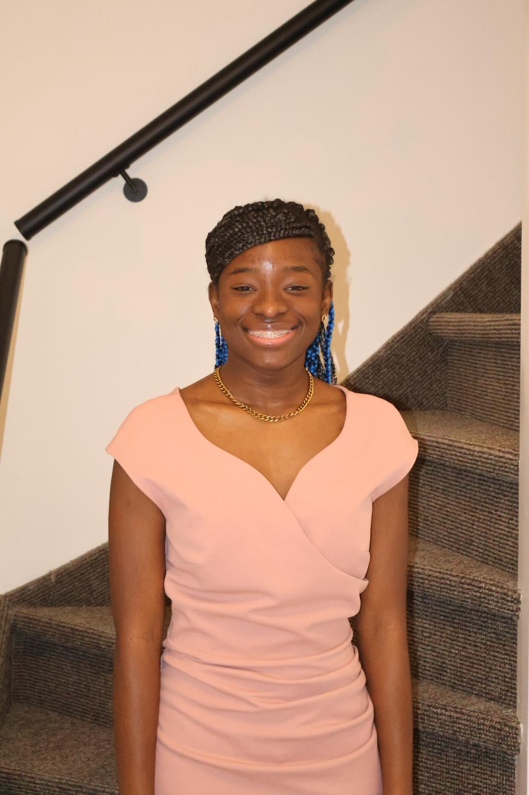

Mijn naam is Zain Vorswijk. Ik ben 20 jaar en woon in Arendonk. Ik studeer Graduaat in Programmeren aan Thomas More in Turnhout. Ik ben een sociaal persoon die graag nieuwe mensen leert kennen. Ik bouw graag websites en ben op zoek naar een stage als front-end developer.
Ik ben een doorzetter. In mijn vrije tijd heb ik Nova gemaakt, een AI-assistent zoals Jarvis. Nova is nog niet af en werkt nog niet altijd perfect, maar ik blijf er in mijn vrije tijd aan werken om het programma te verbeteren.
Ik vind presenteren voor een groep moeilijk, omdat ik er zenuwachtig van word. Daarom bereid ik mijn presentaties altijd goed voor en oefen ik e eerst thuis, voor de spiegel of voor een vriend. Ik probeer ook zo vaak mogelijk te presenteren op school, zodat ik eraan went. Dit is iets waarin ik tijdens mijn opleiding wil groeien.
Momenteel studeer ik Graduaat in Programmeren aan Thomas More in Turnhout. Meer over mijn opleidingen vind je op mijn CV-pagina.
In mijn vrije tijd speel ik graag volleybal en basketbal, en spreek ik graag af met vrienden. Lees meer op mijn hobby-pagina.